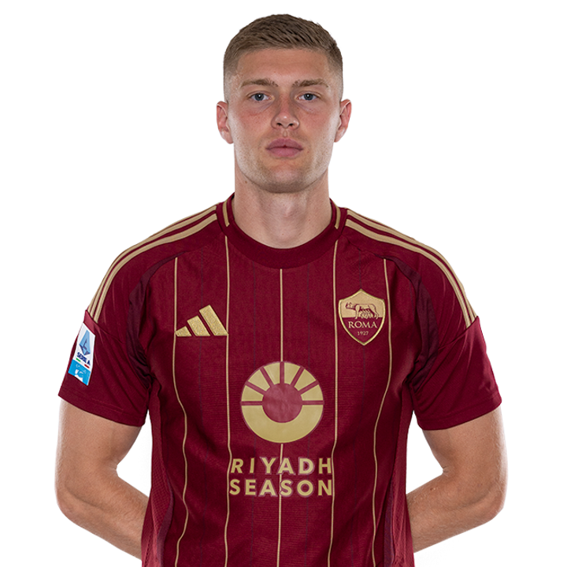

VOTO STAGIONE
6
Red Bull Sadisbocco
- Sommer
- Caprile
- Martinez Jo.
- Pezzella Giu.
- Vasquez
- Zanoli
- Tavares N.
- Dodo'
- Ehizibue
- Beukema
- Gaspar K.
- Mkhitaryan
- Gaetano
- Saelemaekers
- Lovric
- Ciurria
- Oristanio
- Reijnders
- Neres
- Thauvin
- Colombo
- Pierotti
- Castro S.
- Dovbyk
- Douvikas
MVP

Daniel Muci & Alessandro Lana
- In attesa di dichiarazioni ufficiali da parte del fanta allenatore -